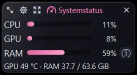
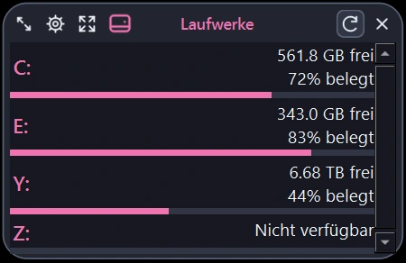
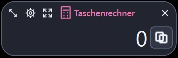
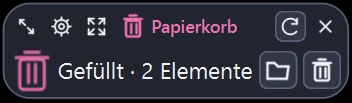
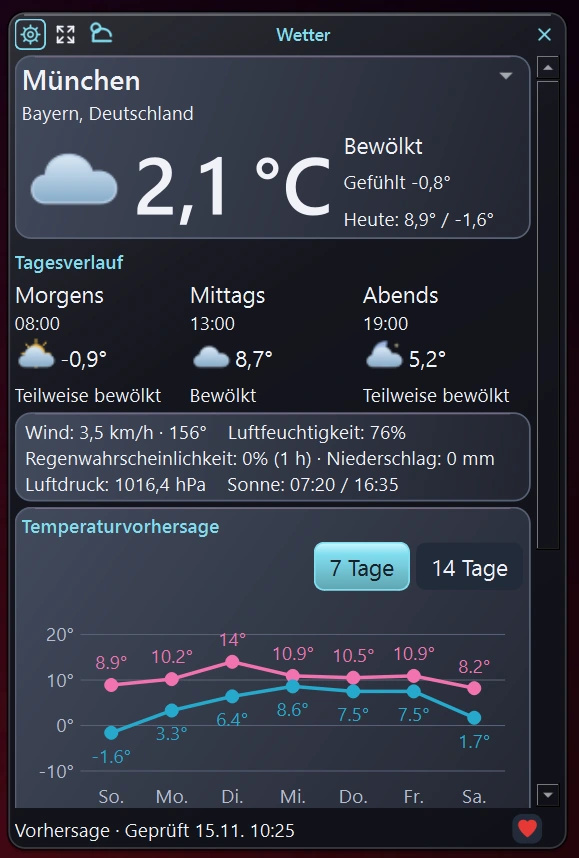
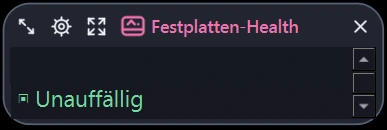
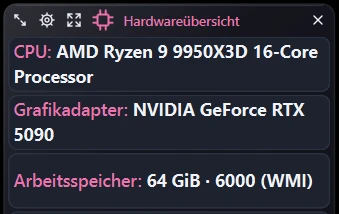

MiniDesk 1.0
All 17 gadgets in detail
Discover what MiniDesk offers and how to use each gadget in everyday tasks.
Digital Clock
Keep the time and date visible on your desktop. This is useful when the taskbar is hidden or you prefer a clock elsewhere on the screen. Move it using the free area of its header and choose the view that suits you.

System Status
See how busy your processor, graphics and memory are at a glance. It can help you notice when a running application uses a lot of resources. Available readings and temperatures depend on Windows, drivers and hardware; missing readings remain unavailable.

Action Timer
Schedule sleep, restart, shutdown or lock after a chosen number of minutes. Select an action and time, then deliberately start the timer; the countdown shows the time remaining. This is useful when you want the computer to stop running after your work.
Before a scheduled shutdown starts, MiniDesk warns that open applications will be forcibly closed if necessary, potentially losing unsaved data. You can cancel before handoff; no further MiniDesk confirmation appears at expiry, and cancellation is no longer assured afterwards. Save your work first.

Instant Actions
Start sleep, restart, shutdown or lock using four buttons. Unlike Action Timer, this is for acting now rather than scheduling a longer wait. Each action retains its confirmations or safety countdowns; save open work before power or restart actions.

Software & Windows
Keep frequently used Windows tools in one place instead of looking them up in the Start menu each time. Open Windows Update, Task Manager, startup apps, the startup folder or Run.
Software Update uses WinGet to find available application updates. Check the programs you want, then start those updates; MiniDesk processes the selection one at a time. Installers may show their own prompts. It does not update every application without asking.
Other selectable shortcuts include Disk Cleanup, storage settings and clipboard history. Tooltips explain the buttons; optional colourful icons can be enabled in the gadget header.

Hardware & Devices
Reach display and scaling, Bluetooth, Device Manager and audio settings straight from your desktop. This is useful when you often switch output devices or adjust your display.
Open audio output, Volume Mixer or Sound (classic), including the Windows Playback, Recording, Sounds and Communications tabs. Existing microphone and system-audio buttons complement these shortcuts.
MiniDesk mainly opens existing Windows features here; it is not a replacement driver manager. Critical actions such as restarting into UEFI retain their confirmation and may restart the computer. Read the prompt and save your work.

Network Detective
Find out whether a connection problem is closer to your router or the internet. Compact view gives a quick overview; detailed view adds response times, connection history and connection information.
Choose how often checks run in settings. Internet targets are fixed; version 1.0 does not offer arbitrary custom targets. Missing replies are a clue, not conclusive proof that the connection is faulty.
The separate download speed test starts only when you choose to run it. It can transfer large amounts of data and does not measure upload speed; use it carefully on mobile or metered connections.

Drives & Storage
See how much space is free or used on your drives. Check it before copying large files, for example. This shows storage capacity, not a drive’s health.

Battery
Keep an eye on the charge level and available battery details. This is especially useful on a laptop running without its charger. Readings may be unavailable when no supported battery is present.

Calendar
Check the date or open the month view to orient yourself in the calendar. Use the header to switch between compact and detailed views.

Calculator
Work out everyday calculations on your desktop without searching for another application. Enter an expression using the available buttons or input and read the result in the gadget.

Recycle Bin
Keep an eye on the Recycle Bin and open it from the gadget when needed. Check its contents in Windows before emptying it; existing safety prompts remain in place.

Weather
Choose a location yourself and set up the weather services you want. Simple view saves space; extended view adds weather details and a temperature trend. Expert view adds optional radar and satellite previews.
Forecasts use Open-Meteo or MET Norway; radar uses RainViewer and OpenStreetMap, and satellite imagery uses EUMETSAT or MET Norway depending on your choice. Forecasts, place search and imagery require separate voluntary permissions; MET may require a contact identifier.
Available readings, forecast days and map images depend on the provider, region and permissions. Historical example images are not a current forecast.

Disk Health
While Drives & Storage shows free capacity, Disk Health focuses on available condition readings. Depending on the drive and Windows support, these can include temperature, operating hours, wear or error counters.
The overview can help you notice unusual readings. Some adapters and drives do not provide all data; missing values do not automatically mean a healthy drive. It replaces neither a full hardware diagnosis nor regular backups.

Hardware Overview
Look up the CPU, graphics, memory configuration, motherboard and BIOS information provided by Windows. This helps when gathering details for a support request, for example.
Refresh Hardware reads the information again. The separate RAM test begins only when you start it in its dialog; it checks a limited memory region and cannot rule out every hardware fault. Available details depend on the device and its drivers.

Power Plans
Choose one of the power plans Windows actually offers on your computer. Reach a power-saving or performance-oriented plan directly from your desktop, for example. Applying a plan changes the active Windows power plan; not every computer offers the same choices.